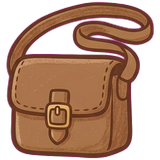

인물 말풍선 시안
받아 적지 않는 인물 대사(첫인사·행동의 대답·질문 뒤 장면·전화)에 말풍선을 띄운다. 받아 적는 대답은 지금처럼 글자 없이. 탐정 줄은 지금 그대로(아래 꿀색, 탐정 얼굴). 예시는 크리스마스 광장의 엘라 첫인사.
A위쪽, 꼬리가 인물로 추천
심문·반환 장면의 말풍선과 같은 모양·자리. 이미 있는 것이라 새 모양이 없다. 탐정 줄은 아래, 인물 줄은 위라 누가 말하는지 바로 갈린다.

<
Ella Deer
Ella DeerDetective! Nice to see you again. I reported it.
▶해석
 지도
지도 Note
Note
소지품B아래쪽, 얼굴 붙임
탐정 말풍선 자리(아래 탭 위)에 흰 종이 + 인물 얼굴. 대화가 한자리에서 이어진다. 대신 인물 몸 아래쪽이 가리고, 색만으로 탐정 줄과 구분한다.
<
Ella Deer
Ella DeerDetective! Nice to see you again. I reported it.
▶해석
지도Note소지품C머리 위 작은 말풍선
인물 머리 바로 위에 글만 담은 작은 말풍선(▶·해석 없음). 만화처럼 가볍다. 긴 대사는 여러 줄이 되어 얼굴을 가릴 수 있고, 다시 듣기·해석을 못 한다.
<
Ella Deer
Detective! Nice to see you again. I reported it.
지도Note소지품D위쪽, 얼굴 붙임 · 꼬리 없음
A 자리에 B처럼 얼굴을 붙이고 꼬리는 뺐다. 전화 줄(경사 얼굴 말풍선)과 같은 짜임. 여러 사람이 있는 장면(점등식)에서도 누가 말하는지 얼굴로 안다.
<
Ella Deer
Ella DeerDetective! Nice to see you again. I reported it.
▶해석
지도Note소지품글자가 나오는 때
- 목소리와 함께: 말풍선이 뜨면서 바로 읽힌다. 가장 편하다.
- 다 들은 뒤 (추천): 목소리 동안은 빈 말풍선(이름·▶만), 다 말하면 글이 떠오른다. 먼저 듣고 맞게 들었는지 확인하는 셈이라 듣기 연습이 남는다.
어느 쪽이든 다 말한 뒤 ▼가 뜨고 화면을 눌러야 다음 줄로 넘어간다(지금과 같음).